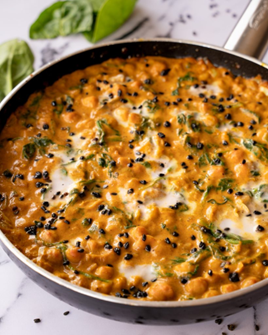

Recetas
Recetas
 Pollo
Pollo
 Pescado
Pescado
 Atun
Atun
 Veganas
Veganas
 Vegetarianas
Vegetarianas
 Quinoa
Quinoa

Curry de garbanzos con espinacas
Un curry reconfortante y lleno de sabor, con garbanzos y espinacas en una salsa cremosa de coco. Ideal para una comida vegana y nutritiva.
Dificultad
Medio

Personas
4

TOTAL
35MIN
Ingredientes:
- 2 tazas de garbanzos cocidos
- 4 tazas de espinacas frescas
- 1 lata de leche de coco (400 ml)
- 1 cebolla, picada finamente
- 2 dientes de ajo, picados
- 1 cucharadita de curry en polvo
- 1 cucharadita de cúrcuma
- 1 cucharadita de comino
- 1 cucharada de aceite de oliva
- Sal y pimienta al gusto
Información nutricional (aproximada por porción):
- Calorías: 350 kcal
- Proteínas: 15 g
- Grasas: 20 g
- Carbohidratos: 30 g
- Fibra: 10 g
A cocinar:
- Calienta el aceite de oliva en una sartén grande y sofríe la cebolla durante 3-4 minutos, hasta que esté suave. Agrega el ajo y cocina por 1 minuto más.
- Añade las especias (curry, cúrcuma y comino) y cocina por 2 minutos para que liberen su aroma.
- Agrega los garbanzos cocidos y la leche de coco, removiendo bien. Cocina a fuego medio durante 10 minutos, dejando que los sabores se mezclen.
- Incorpora las espinacas y cocina por 2-3 minutos hasta que se marchiten.
- Sirve caliente, acompañando con arroz integral si lo deseas.